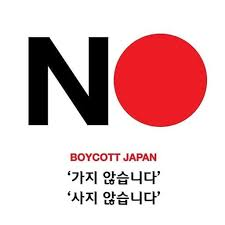

2019년 7월, 일본 총리 아베 신조가 대한민국에 대해 수출통제 조치를 취하자,
이에 대한 대응으로서 한국에서 일어난 일본 상품 불매운동이다.
인터넷 상에서 불매운동을 지지하는 이들은 각종 일본 기업 리스트를 제작하여 배포하고 있다.
한국에 대한 수출 통제 조치에 대해 일본 측에서는 핵심소재의 북한 밀반입 등의 부적절한 건을 이유로 들었지만,
산업통상자원부와 재무성의 각각 다른 통계자료와 주장을 하기 때문에 그 여부를 정확히 확인하기 어렵다.
참고 따라서 조선인 강제징용 배상 판결에 대한 아베 총리의 보복이라는 견해가 현재 유력하다.
이에 대한 평가는 한일 무역 분쟁에 대한 국민적 대응이라 지지하거나 국수주의적 발상이라 혹평하는 것으로 나뉘고 있다.
2019년 이전에도 일본 불매운동은 여러 번 벌어졌으나 2019년의 불매운동은 이전의 불매운동과는
몇몇 차이들이 있다.
이전의 불매운동은 주로 과거사 문제, 독도 문제와 연결되었다.
즉 일본이 독도 영유권을 주장하거나 일제강점기 등 과거사에 대한 망언 등이 나오면서
이에 대한 반발로 일어난 경우가 많았다.
하지만 2019년의 불매운동의 경우 일본의 한국에 대한 수출 규제에 따른 반발이 주요한 원인이다.
이전의 불매운동은 대부분 소매를 위한 일반 소비자들이 사지 않는다는 뜻의 불매(不買)운동으로 한정되었다. 그러나 2019년 불매운동은 사지 않을 뿐만 아니라 팔지 않는다는 뜻의 불매(不賣)까지 의미가 확장된 것이 차별점이다.
즉, 소비자뿐만 아니라 일본 제품을 유통·판매하는 업체들도 이 운동에 참여한다는 의미이다.
이전의 불매운동은 시민단체와 같은 특정 단체나 커뮤니티가 '주도'한 경우가 많았으나,
이 2019년 불매운동은 다수의 시민들이 '자발적'으로 참여하는 형태가 많았다.
불매운동 참가자와
지지자들은 운동의 성격을 철저하게 자발적 시민운동으로 이어가자고 주장하며 중구 반일기 게양 논란
등 일부 정치적 세력의 운동 개입 시도에 대해서도 정부와 지자체는 개입하지 말고 외교전에만 집중하라며
반발하고 있다.
2019년 9월에 통계가 나온 7~8월 일본 차량의 판매·출고 대수는 전년 동월 대비 56.9% 급감했다. 렉서스의 영향으로 56.9%가 나온 것이며, 렉서스를 제외한 토요타, 혼다,
닛산, 인피니티 등의 타 브랜드는 80% 가까이 판매량이 줄어들었다.